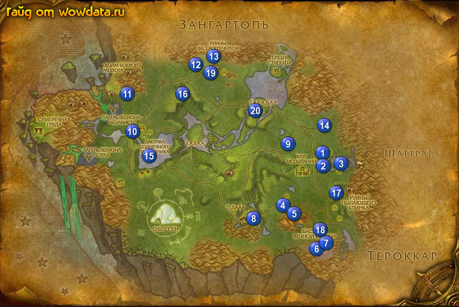

1) Идите по дороге на юго-восток, пока не дойдете до 1 (51, 71).
2) Найдите Охотница Кима, она ходит по городу, начните у нее <Разграбленный караван>.
3) Пройдите немного дальше 2 (55, 71) и начните <Разыскивается: Гизельда Колдунья> и <Разыскивается: Зорбо Советчик> на столбе оъявлений, рядом со столбом поговорите с Страж-смотритель Мой'прн Джилл, начните у него <Лютые враги>, а рядом с ним у Нахууд закончите <Послание в Телаар>.
4) Через дорогу у Охотница Бинтук начните <Не верь глазам своим>, затем идите в здание сзади нее, и на балконе у Повелитель стихий Локи начните <Трон Стихий>.
5) Пройдите немного наверх к фoнтану (интерестный такой фoнтанчик, похож на фиолетовый кристалл), увидите там 3 НПС, начните <Остановить заразу> у Отонбу Ведун и <Решение проблемы> у Полилуклук Мудрейший.
6) Поднемитесь в гостиницу 3 (54, 75) и сделайте ее своим домом, купите нового вида еды и воды, выйдите из гоститицы и поднемитесь на ее крышу, откройте пункт полета.
7) Пройдите на восток 4 (61, 67) пока не увидите Вазат, начните <Я их достану!>, теперь бейте элементалей (они как ураганчики) которых увидите чтобы получить с них газ, не не идите специально за ним сейчас.
8) Идите дальше на восток на гору 5 (64, 70) и бейте Истерзанный дух земли для <Страдающие духи земли>, и на западе от сюда Охотник клана Тяжелого Кулака для <Не верь глазам своим>.
9) Идите на юго-восток к 6 (69, 81) и убейте 15 Посланник бастиона Вечной Скорби тут для <Разыскивается: Гизельда Колдунья>, из них так же падают [Знак Кил'джедена]. Гизельда Колдунья может находится в здании 7 (71, 81).
10) Вернитесь в .
11) Идите к Страж-смотритель Мой'прн Джилл 8 (55, 71) и закончите у него <Разыскивается: Гизельда Мегера>, и через дорогу у Охотница Бинтук закончите <Не верь глазам своим> и начните <Только не в мою смену!>.
12) Идите по дороге ведущей на запад от Telaar пока вам не встретятся Прожорливый ветрух 9 (47, 63) для <Охота на ветрухов>. Они обитают прямо до Халаа.
13) Идите к 10 (30, 42) и бейте Налетчик из племени Темной Крови Падальщик из племени Темной Крови для <Решение проблемы>, а также используйте факел из вашего инвентаря для сжигания трупов для <Остановить заразу>.
14) Идите на север к Холм Боевого Молота, поднемитесь наверх 11 (29, 31) и ищите на земле Телаарский ящик с припасами для <Разграбленный караван>, также собирайте с огров [Обсидиановое боевое ожерелье] для <Лютые враги>.
15) Идите на восток в 12 (43, 21) и бейте огров для <Разыскивается: Зорбо Советчик>, вы найдете Зорбо Советчик в маленькой пещерке 13 (46, 19) на верху.
16) Идите на восток к Трон Стихий закончите там <Разлагатели Темной Крови>, <Трон Стихий>, <Редкий деликатес>, начните <Беспокойные духи озера Небесной Песни> и закончите <Грязные делишки>.
17) найдите Гордауг, большого каменного элементала и закончите у него <Страдающие духи земли>, начните <Попробовать зло на зуб>.
18) Идите обрактно на запад к Руины Веселого Черепа, и около них ищите и бейте Разъяренный сокрушитель.
19) Идите на юг купаться в Озеро Небесной Песни, а заодно бейте Озерный дух для <Беспокойные духи озера Небесной Песни>.
20) Идите обратнок Трон Стихий и закончите <Попробовать зло на зуб> у Гордауг, затем начните <Сорвать маску>. Подойдите к Повелитель cтихий Ло'ап, закончите <Беспокойные духи озера Небесной Песни> и начните <Благословение Возжигателя>.
21) Идите на юг к 14 (71, 41), закончите <Охота на ветрухов> <Охота на шерсторогов> <Охота на талбуков>, игнорируйте следующие части квестов если у вас нету в планах сбора группы.
22) У вас сейчас должно быть 40 – 50% на следующий лвл.
23) Теперь идите на юг в 2 (71, 51) там в лагере вы найдете всего 4 постройки, все нужно спалить, использовав внутри них [Живой огонь].
24) Идите на север к Трон Стихий, закончите там <Благословение Возжигателя>, начните <Оскверненный дух>.
25) Идите к Халаа, если она под контролем альянса, то сдайте кристалы.
26) Спуститесь вниз к Озеро Солнечного Источника 15 (33, 51) и ищите Загрязненная сущность Ватуусана – большой элементал, убейте 10 штук Озерный волноплеск для <Оскверненный дух>.
27) Идите на юг к краю зоны, вы увидите Расколотый грохотун, ипользуйте на них [Валун Гордауга], тут же сбегуться Прислужник Гурока, бейте их для <Сорвать маску>. Их очень легко убить.
28) Вернитесь по руне в Телаар.
29) Выйдите из гостиницы и идите к фонтану, закончите там <Решение проблемы> и <Остановить заразу>.
30) Пройдите через мост и тут же направо, у Страж-смотритель Мой'прн Джилл закончите <Разыскивается: Зорбо Советчик> и <Лютые враги>.
31) найдите Охотница Кима и закончите у нее <Разграбленный караван>.
32) Идите на восток из города к 4 (61, 67), вы должны уже были собрать 3 [Газ стихии воздуха], так что закончите <Я их достану!>, игнорируйте <Принеси мне яйцо!>.
33) Идите на юг в горы, там вы увидите спящего Глыб , убейте охрану и бейте его пока он не сядет и не станет дружелюбным, затем поговорите с ним для <Только не в мою смену!>.
34) Идите обратно в Telaar к Охотница Бинтук и закончите <Только не в мою смену!>, начните <Мо'мор Разрушитель>, идите к фонтану к Мо'мор Разрушитель,закончите его и начните <Руины Пылающего Клинка>.
35) Идите на восток к Руины Пылающего Клинка и бейте огров для <Руины Пылающего Клинка>, так же в лагере рядом вы найдете клетку с Корки, начните у него <НА ПОМОЩЬ!>, и когда выпадет ключ выпустите его.
36) Бегите обратно в Телаар, найдите Арехрон и закончите <НА ПОМОЩЬ!>, начните <Корки снова пропал!>.
37) Идите в центр города к фoнтану и у Мо'мор Разрушитель закончите <Руины Пылающего Клинка> и начните <Расселины Награнда>.
38) Идите на север к 16 (40, 31) и бейте огров для <Расселины Награнда>. Так же вы найдете тут Корки 16 (39, 27) в клетке, и как только найдете ключ освободите его.
39) Вернитесь по руне в Телаар.
40) Идите вниз к фантану и закончите <Расселины Награнда>, начните <Дипломатическая миссия>, затем идите к Арехрон на болконе и закончите <Корки снова пропал!>, начните <Выкуп за Корки>.
41) У вас сейчас должно быть 80 – 85% на 66 лвл.
42) Снова идите к Руины Пылающего Клинка, поднемитесь на самый верх, там вы увидите Лантрезор Клинок 17 (73, 62), выслушайте его историю, а потом закончите <Дипломатическая миссия>, затем начните <Военная хитрость> и <Безжалостное коварство>.
43) Идите на югo-запад к 18 (70, 75) и используйте [Знамя огров Боевого Молота] на трупы убитых вами орков для <Безжалостное коварство> и так же ищите Оружие Смертной Тоски для <Военная хитрость>.
44) Когда закончите идите обратно в Руины Пылающего Клинка на верх и здайте оба квеста. Затем начните <Взаимная вежливость> и <Вещественное доказательство>.
45) Идите к Трон Стихий, у Повелитель cтихий Ло'ап закончите <Оскверненный дух>, затем найдите Гордауг и закончите <Сорвать маску>, игнорируйте <Гурок Захватчик>.
46) Идите на запад к Руины Веселого Черепа и делайте <Взаимная вежливость>. Далее идите делайте <Вещественное доказательство> 19 (46, 24) – используйте [Отсыревшее шерстяное одеяло] около костра, появятся 2 дружелюбных огра, защищайте их.
47) Вернитесь по руне в Телаар.
48) Сдайте амулеты за репутацию.
49) Идите в Руины Пылающего Клинка к Лантрезор Клинок, закончите у него <Взаимная вежливость> и <Вещественное доказательство>, начните <Послание в Телаар>.
50) найдите группу и сходите в Кривой Клык: Узилище, если вы не хотите туда ийти то следуйте пункту 51.
51) Идите обратно в Телаар и закончите <Послание в Телаар> у Арехрон.
52) Если вы пойдете в Кривой Клык: Узилище то начните <Провалившийся рейд> в гостинице Телредор, и сделайте ее своим домом. закончите его около инста 20 (52, 36). Нужный вам вход с левой стороны.
53) Теперь летите в Прибежище Оребор, начните <Не время для любопытства>, идите наверх в Острогорье.